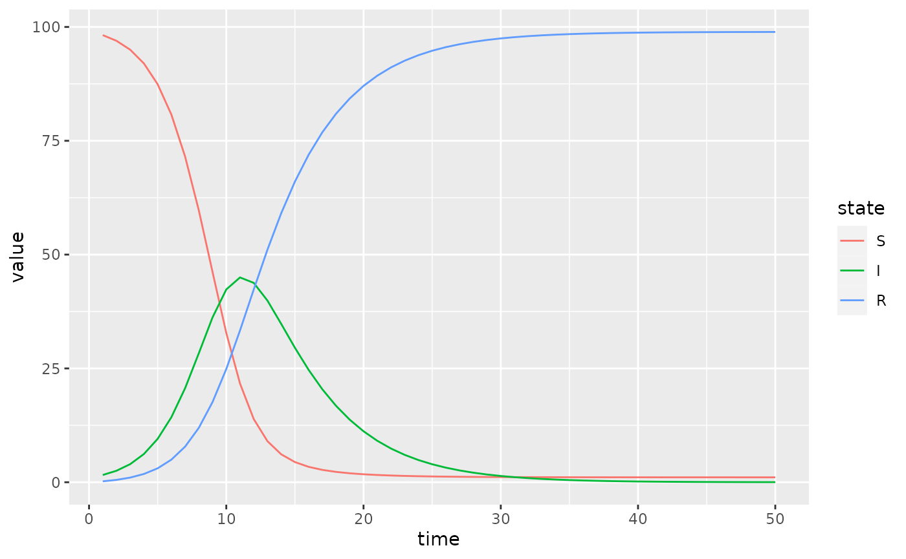
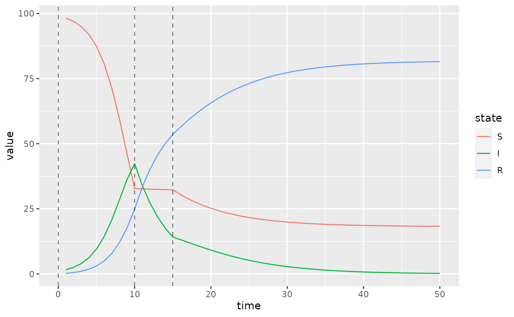

Specifying Time-Varying Parameters
Source:vignettes/time-varying-parameters.Rmd
time-varying-parameters.RmdBaseline SIR Model
Here we modify an SIR model so that transmission rate is time-varying.
sir = Compartmental(system.file("starter_models", "sir", package = "macpan2"))
simulator = sir$simulators$tmb(time_steps = 50
, state = c(S = 99, I = 1, R = 0)
, flow = c(foi = 0, gamma = 0.2)
, N = empty_matrix
, beta = 0.8
)
(simulator$report(.phases = "during")
%>% rename(state = row)
%>% mutate(state = factor(state, sir$labels$state()))
%>% ggplot() + geom_line(aes(time, value, colour = state))
)
Piecewise Time Variation
We now change the value of the transmission rate, beta,
at the beginning of time-step 10 and 15. In the first step we add to the
simulator a vector containing these change-points.
simulator$add$matrices(beta_changepoints = c(0, 10, 15))Next we add the values to which beta changes at these
time-steps.
simulator$add$matrices(beta_values = c(0.8, 0.01, 0.4))We also need a variable to track the current value of
beta. This beta_pointer starts at time-step
equal to 0, and it will be incremented throughout the simulation.
simulator$add$matrices(beta_pointer = 0)We increment beta_pointer using the time_group
function that returns either beta_pointer or
beta_pointer + 1 depending on whether or not the current
time-step is at a change-point in beta_changepoints.
simulator$insert$expressions(
beta_pointer ~ time_group(beta_pointer, beta_changepoints),
.phase = "during"
)We update beta at every iteration of the simulation loop
using this beta_pointer.
simulator$insert$expressions(
beta ~ beta_values[beta_pointer],
.phase = "during"
)And that’s it. Now we plot the updated simulations using these change-points, which we highlight with vertical lines.
s = simulator$report(.phases = "during")
(s
%>% rename(state = row)
%>% mutate(state = factor(state, sir$labels$state()))
%>% ggplot()
+ geom_line(aes(time, value, colour = state))
+ geom_vline(
aes(xintercept = x),
linetype = "dashed",
alpha = 0.5,
data = data.frame(x = simulator$get$initial("beta_changepoints"))
)
)